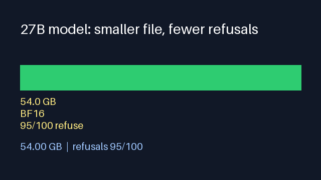
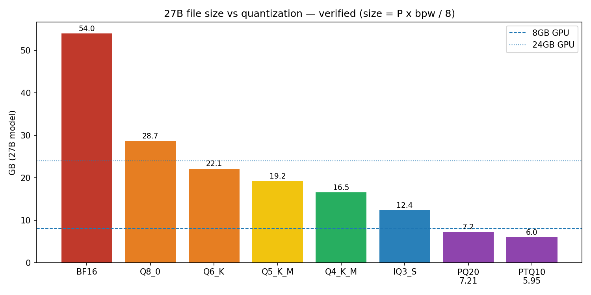
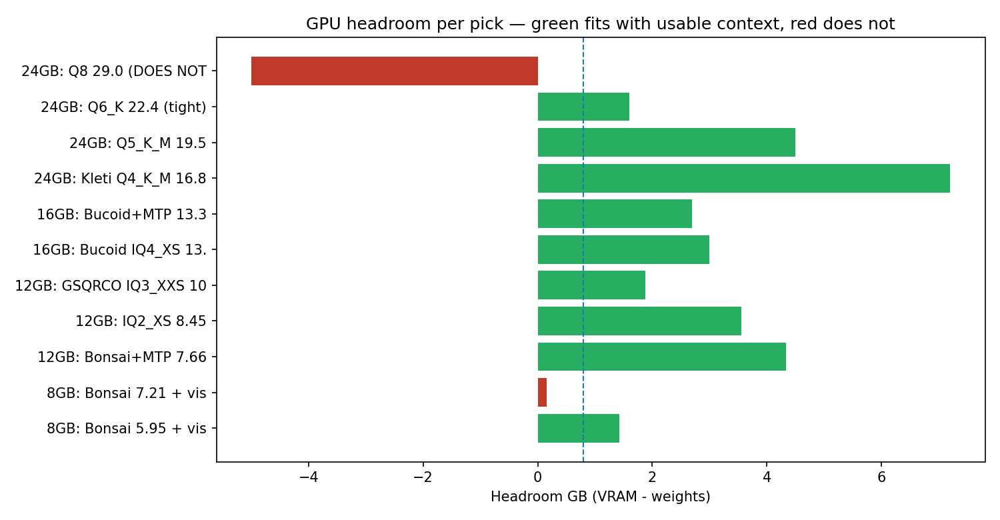

CEO summary. A 27B model needs 54 GB at full precision, ~16.5 GB at 4-bit, and 5.95 GB at ~1.76 bits per weight via ternary quantization. "Zero refusals" = one refusal direction erased from 34 of 851 weight blocks (behavior change 0.0135) — every count labeled author-reported. Fit rule: file + cache + vision < VRAM. Full paper in this repo's README.
Safety first. Run these builds only on your own machine. A model with refusals removed answers what you ask — you own the request. This page teaches mechanisms and math only.
🎬 Watch the story in 5 seconds

🌱 Beginner path (2 minutes)
1. A model = billions of numbers. File size = numbers × bits each ÷ 8.
2. 16 bits → 54 GB. ~4.9 bits → ~16.5 GB. ~1.76 bits (ternary: only −1/0/+1 allowed) → 5.95 GB.
3. Memory = file + context cache (grows with tokens) + vision. All three must fit your GPU.
4. "Obliterated" = one refusal direction deleted from a thin slice of weights; everything else kept.
5. Never compare 0/100 with 0/465 — different tests. Trust cards that publish misses + behavior-change.
📉 Size ladder

🎮 Fit per GPU

🎮 GPU picks
| GPU | Start with | Why |
|---|---|---|
| 8 GB | 5.95 GB ternary + 0.63 vision | only combo with real headroom (~52k tok) |
| 12 GB | 7.66 GB ternary + draft head | most headroom (~159k tok) |
| 16 GB | 13.0 GB (long context) or 11.8 GB (small file) | 110k tok card figure |
| 24 GB | Q4 16.8 GB → Q5 19.5 GB | misses published; Q8 29 GB doesn't fit |
🧠 Interactive quiz — scratch to pro
Score: 0 / 6
🔬 Deep cuts (from the paper)
- 8 GB trap: 7.21 + vision leaves 0.16 GB → ~6k tokens. Short-window-only.
- Hybrid attention: ~27 KB/token matches 16 caching layers, not 48 — long context ~3× cheaper.
- KL is honest: 0.01–0.16 (automated) vs 0.45–1.04 (manual) measures what you broke.
- Draft-head tax ~25%: +0.45 GB, +24% cache/token, −30k tokens for +40%–3× speed (author-claimed).
- MoE truth: 35B/3B-active still loads all 35B — sparsity saves compute, not VRAM.
Reproduce: docker compose up · python3 experiments/01_quant_math_verify.py · 02_kv_cache_fit.py · 03_refusal_theory_verify.py · 04_live_hf_verify.py